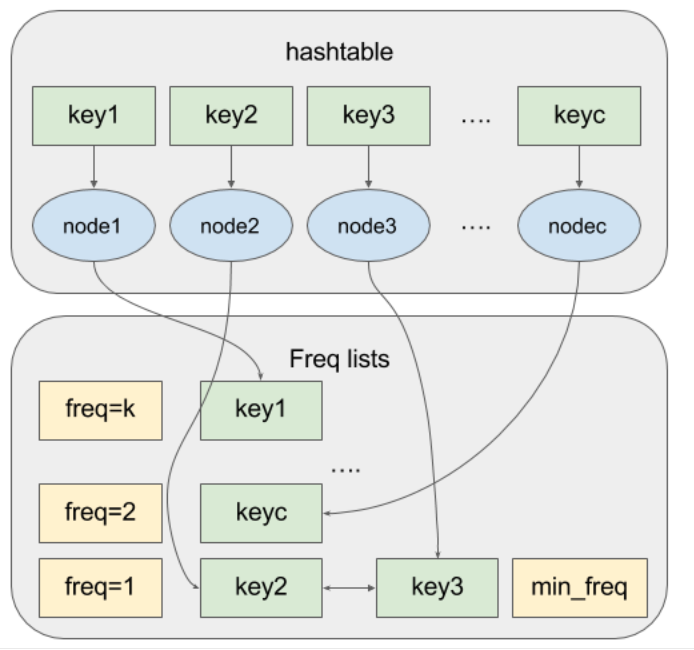

Easy choice, hard life; hard choice, easy life.
总结一下两道缓存器设计题目，分别是LRU Cache和LFU Cache。二者设计既有共同点，也有区别，下面分别进行讨论。
LRU Cache
先普及下知识，什么是Least Recently Used (LRU) cache：在一个缓存器中，存储着容量(capacity)以内的元素(key, value)，对该存储器无论事存(put)还是取(get)都相当于使用了一次该元素。当容量达到上限，继续存储时，该存储器就会扔掉最少的元素。例如容量为2时，我们先put(key = 1, value = 1)，再put(key = 2, value = 2)，当我们调用get(key = 1)时，(1,1)这个元素的优先级就提高了，如果再次put(key = 3, value = 3)，则会将最少使用的(2,2)丢掉。
题目：要求实现LRU Cache中put和get时间复杂度都为O(1)的方法
方法：要求删除和插入时间复杂度都为O(1)，那么最先想到的就是double list，假设我们已经知道了一个节点node的位置，删除该节点只需node->pre->next = node->next，node->next->pre = node->pre即可完成。如果double list要插入node_new，只需node_new->pre = node->pre, node_new->next = node,node->pre->next = node_new, node->pre = node_new即可。C++中，list即为double list。
那么接下来的问题就是如何在O(1)时间内找到double list的节点位置，我们可以用hash table进行实现，C++中的数据结构为unordered_map。在unordered_map中存储key和对应的double list节点的地址(迭代器)，则当我们查询某个元素的时候即可快速返回其在double list中的位置。

接下来就是具体的实现逻辑了，通过伪代码的方法进行介绍：
class LRUCache { private: int capacity; list<pair<int, int>> recent; unordered_map<int, list<pair<int, int>>::iterator> map; public: LRUCache(int capacity) : capacity(capacity) {} int get(int key) { } void put(int key, int value) { } };
|
最后的实现代码：
class LRUCache { private: int capacity; list<pair<int, int>> recent; unordered_map<int, list<pair<int, int>>::iterator> map; public: LRUCache(int capacity) : capacity(capacity) {} int get(int key) { if(map.find(key) != map.end()){ put(key, map[key]->second); return map[key]->second; } return -1; } void put(int key, int value) { if(map.find(key) != map.end()) { auto it = map[key]; recent.erase(it); }else if(recent.size() >= capacity) { map.erase(recent.back().first); printf("erase:%d\n",recent.back().first); recent.pop_back(); } recent.push_front({key, value}); printf("put:%d\n",recent.front()); map[key] = recent.begin(); } };
|
LFU Cache
LFU Cache是指，根据元素的使用频率，当元素超过容量上限时，优先删除使用频率最低的元素，如果有多个使用频率最低的元素，优先删除最近不使用的那个(这点和LRU Cache一致)。LFU Cache的put和get也可以做到O(1)复杂度，不过做法稍微复杂一些。
方法：首先因为要统计元素的使用频率，我们需要重新对node设计一个struct，包括其key, value, 频率freq以及指向链表的一个指针。我们采用两个hash table，第一个存储的是key和对应的node结构，第二个map存储了一个频率链表。即按照不同的使用频率进行划分，而之前提到的node指针就指向了该链表中的节点的位置。但我们put一个节点时，如果该节点已经存在，我们就会将其提升到频率+1的链表头，删去原来所在的链表位置。此外我们用一个min_freq_记录当前使用最少的节点的频率，当元素超过容量时，我们优先删去min_freq_对应的链表的尾，即实现了删除最低频率下最少使用的元素。

该题逻辑比较复杂，在面试中常作为LRU的follow up，一般只要求回答具体使用的结构即可。
实现代码：
struct CacheNode { int key; int value; int freq; list<int>::const_iterator it; }; class LFUCache { private: int capacity_; int min_freq_; unordered_map<int, CacheNode> n_; unordered_map<int, list<int>> l_; void touch(CacheNode& node) { const int prev_freq = node.freq; const int freq = ++(node.freq); l_[prev_freq].erase(node.it); if(l_[prev_freq].empty() && prev_freq == min_freq_) { l_.erase(prev_freq); ++min_freq_; } l_[freq].push_front(node.key); node.it = l_[freq].cbegin(); } public: LFUCache(int capacity): capacity_(capacity), min_freq_(0) { } int get(int key) { auto it = n_.find(key); if (it == n_.cend()) return -1; touch(it->second); return it->second.value; } void put(int key, int value) { if (capacity_ == 0) return; auto it = n_.find(key); if (it != n_.cend()) { it->second.value = value; touch(it->second); return; } if (n_.size() == capacity_) { const int key_to_evict = l_[min_freq_].back(); l_[min_freq_].pop_back(); n_.erase(key_to_evict); } const int freq = 1; min_freq_ = freq; l_[freq].push_front(key); n_[key] = {key, value, freq, l_[freq].cbegin()}; } };
|